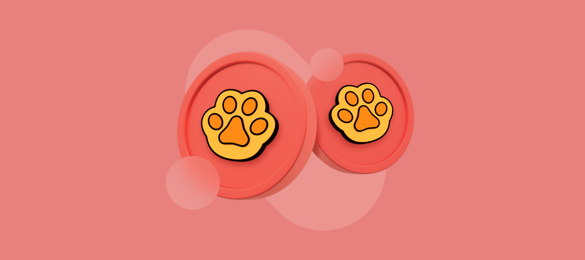

.png)
This handbook explains PawSwap mechanics for power users: pool design on PawSwap Exchange, modeling effective price (received tokens minus gas/fees), and order sizing for depth on PawSwap Chain. You’ll also find LP strategy, analytics KPIs, and a troubleshooting runbook.
PawSwap Pools — Execution & Liquidity Behavior
PawSwap supports two common AMM archetypes: volatile (constant-product x·y=k) for non-correlated pairs and stable (curve-like) for correlated assets. The router may use multi-hop routes to improve effective price by balancing pool fees, gas, and price impact.
Stable vs Volatile — Practical Comparison
| Dimension | Stable Pools | Volatile Pools |
|---|---|---|
| Liquidity Shape | Curve compresses slippage near parity (e.g., pegged/strongly correlated pairs) | Classic x·y=k; slippage scales with depth and trade size |
| When It Wins | Correlated pairs, tight tolerances, routing pivots | Non-correlated assets with consistent volume |
| Routing Notes | Useful as a pivot leg for larger tickets | Direct hop is simpler and cheapest on gas |
| LP Considerations | Lower IL; fee APY tied to stable volume | Higher IL risk; fees offset if two-sided flow persists |
Swap Methods on PawSwap (Router, Direct, Aggregators)
For small tickets, direct routes often suffice. For larger trades, the PawSwap Exchange router may combine a stable pivot with a volatile leg to reduce impact. If moving value from another network, bridge first via a reputable cross-chain service, then execute locally on PawSwap Chain.
Method Comparison for PawSwap Execution
| Method | Best For | Key Features | Considerations |
|---|---|---|---|
| PawSwap Router | Net-best price | Chooses stable vs volatile; multi-hop if needed; weighs gas vs output | Always verify token contracts; inspect route preview for size |
| Direct Stable | Correlated pairs | Curve near parity; tight execution | Thin stable pools can underperform deep volatile legs |
| Direct Volatile | Non-correlated pairs with depth | Simplest path and low gas | Slippage rises with order size |
| External Aggregator | Cross-venue comparisons | Benchmarks PawSwap Exchange vs others | Extra hops; compare net (gas + price) |
Fees on PawSwap — Gas, Pool Fee, Price Impact
Your effective price = received tokens minus gas (native token) minus pool fees minus implicit price impact. On PawSwap Chain, gas is typically modest; pool depth, fee tier, and slippage discipline dominate results.
Typical Fee Components
| Fee Type | Typical Range | Notes |
|---|---|---|
| Gas (native token) | Low; varies with load | Keep a buffer; during volatility, a higher priority tip reduces pending time. |
| Pool Fee | ~0.05%–0.3%+ | Varies by pool tier/model; check the UI breakdown before signing. |
| Price Impact | Depth-dependent | Split size or consider limit/DCA when depth is thin. |
Advanced PawSwap Strategy — Slippage, MEV, Sizing
Slippage Framework
- Stables/majors: 0.10–0.50% typical on deep pools.
- Mid/long-tail: Start conservative; widen after testing route stability.
- High volatility: Slightly widen or use limit orders to avoid repeated reverts.
MEV-Aware Execution
- Prefer private/builder RPC if available to reduce mempool exposure.
- Split large orders; smaller footprints reduce sandwich incentives.
- Raise priority fee in busy periods to shorten time-to-inclusion.
Analytics & KPIs for PawSwap Exchange
- Quoted vs realized output: Measure drift from slippage, fees, and inclusion delay.
- Effective price: Received per unit after all costs — the only fair route comparator.
- Fail/Cancel rate: Indicator for tuning slippage presets and RPC health.
Liquidity Providing on PawSwap
As an LP you earn fees but assume inventory risk. Stable pools mitigate IL on correlated pairs; volatile pools can out-earn via fees when two-sided flow is persistent. Align pool choice with your risk tolerance and with durable demand on PawSwap Exchange.
LP Best Practices
- Prefer pairs with steady, organic flow and sensible fee tiers.
- Model IL vs fee income across scenarios; do not extrapolate from a single day.
- Reinvest fees thoughtfully; track net PnL (fees − IL − gas).
Troubleshooting PawSwap — Common Errors & Fixes
- INSUFFICIENT_OUTPUT_AMOUNT: Price moved; refresh quotes, widen slippage modestly, or split size.
- TRANSFER_FROM_FAILED: Missing/insufficient allowance or non-standard token. Re-approve the minimum and retry.
- Pending too long: Raise priority fee or switch RPC; consider private submission where available.
- Unexpected token received: Verify exact contract addresses on the PawSwap Chain explorer; confirm route hops in the UI.
Authoritative & Trustworthy Resources
Validate each step with primary sources and explorers.
- PawSwap Docs — Official documentation for PawSwap & PawSwap Exchange.
- PawSwap Chain Explorer — Verify token contracts and track transactions.
- MetaMask Learn — Wallet safety, approvals, and gas basics.
PawSwap FAQ — PawSwap, PawSwap Exchange, PawSwap Chain
When should I use stable vs volatile pools on PawSwap?
Stable: correlated/pegged pairs for tight tolerances. Volatile: non-correlated pairs with depth. The router typically chooses based on effective price.
What is PawSwap Chain in practice?
PawSwap Chain refers to the network environment where PawSwap Exchange routes and settles swaps. Always keep the native gas token for approvals and swaps.
What slippage is reasonable on PawSwap Exchange?
Stables/majors: 0.1–0.5%. Mid/long-tail: higher, but start conservative. If swaps fail, refresh quotes, adjust slippage, or split the order.
How do I minimize MEV on PawSwap Chain?
Use tight slippage, submit during calmer periods, consider private/builder RPC, split large orders, and bump priority fee when the network is busy.
Why can realized output differ from the quote?
On-chain state evolves between quote and inclusion. Other trades move price and gas adds friction. Compare routes by effective price, not just the headline quote.
Do I need KYC to trade on PawSwap?
PawSwap is wallet-connected. Typically no KYC, but follow local laws and keep records for reporting.
How big can I trade without heavy slippage?
Depends on pool depth and current volatility. For size, inspect route preview, split orders, or consider limit/DCA if your toolset supports it.
How do I verify I’m swapping the correct token?
Match contract addresses using the official project links and the PawSwap Chain explorer. Never rely on tickers or icons alone.